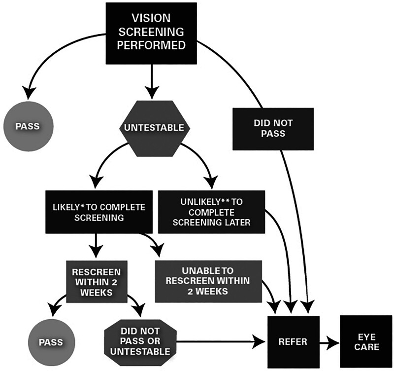
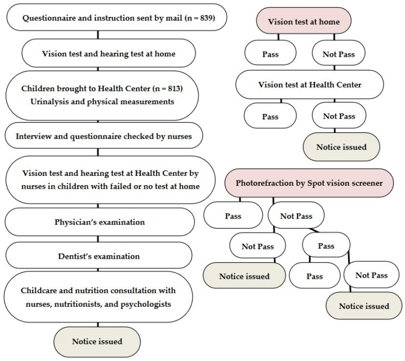
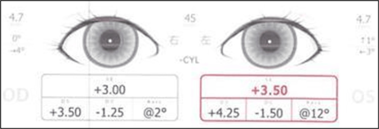
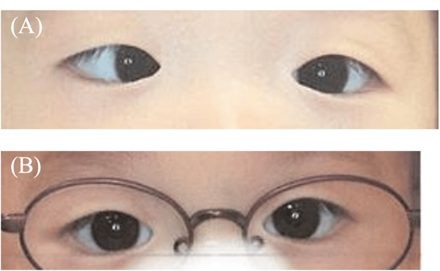
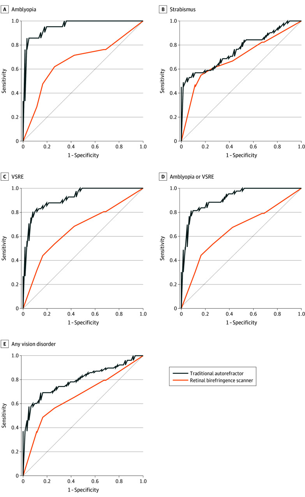

483 — Sàng lọc thị lực trẻ mầm non: photoscreener/autorefractor, ngưỡng chuyển tuyến & vì sao bỏ sót lác nhỏ / Preschool vision screening: photoscreeners, referral thresholds and why small-angle strabismus is missed
Tags: pattern:sang-loc pattern:khuc-xa pattern:lac vung:mat protocol:chinh-thi-tre-mam-non score:NCCVEH-2025 incidentaloma:khuc-xa-tre
Mức chắc chắn (certainty): tổng hợp y văn (literature synthesis) — tự biên từ khuyến cáo NCCVEH 2025 (CC BY-NC-ND), 1 thử nghiệm độ chính xác chẩn đoán JAMA Ophthalmol 2026 (CC BY-NC-ND), 1 loạt ca Cureus 2026 (CC BY) và 1 chương trình cộng đồng 813 trẻ (CC BY), chưa gắn một ca nguyên văn đơn lẻ.
1. Tổng quan — sàng lọc để làm gì, và giới hạn vật lý của máy
- Mục tiêu (goal): tìm trẻ 3 – dưới 6 tuổi có tật khúc xạ đáng kể chưa chỉnh, nhược thị (amblyopia), lác (strabismus), giảm thị lực hoặc bệnh mắt khác, rồi chuyển tuyến khám chuyên khoa — không phải để chẩn đoán tại chỗ. Khuyến cáo NCCVEH 2025: sàng lọc HẰNG NĂM cho mọi trẻ 3 đến < 6 tuổi (Pang Y, Optom Vis Sci 2025, PMC12520030).
- Vì sao phải sớm — sinh lý "cửa sổ": vỏ não thị giác có thời kỳ nhạy cảm; nhược thị điều trị càng sớm càng tốt, và đây là nguyên nhân giảm thị lực một mắt hàng đầu ở trẻ. Nhược thị 0,8 – 3,0%; lác 0,08 – 4,6% ở trẻ 3 – < 6 tuổi (Pang Y, PMC12520030).
- Tần suất các bất thường khúc xạ (MEPEDS/BPEDS, dẫn trong PMC12520030):
- Cận thị: 1,9 – 4,9% tuỳ sắc tộc.
- Loạn thị > 1,50 DC: 5,2 – 13,2%.
- Dị khúc xạ (anisometropia): 1,0 – 1,5% khi chênh ≥ 2,00 DS; 3,4 – 4,0% khi chênh ≥ 1,00 DS.
- Viễn thị là tật khúc xạ phổ biến nhất; viễn thị ≥ +4,00 D liên quan điểm đọc viết sớm kém hơn, còn +3,00 đến +4,00 D đã có thể giảm thị lực gần/lập thể (VIP-HIP).
- TẠI SAO máy ảnh khúc xạ (photoscreener) bỏ sót lác nhỏ — giải thích vật lý:
- Máy đo khúc xạ qua ảnh hồng ngoại (infrared photorefraction) ở khoảng cách ~1 m, không tạo đủ kích thích điều tiết (accommodative demand) để "lộ" lác trong điều tiết; lác chỉ hiện khi nhìn gần hoặc lúc mệt sẽ nằm ngoài cửa sổ đo.
- Thuật toán máy ước lượng vị trí/độ lệch ánh phản xạ, không đo góc lác như nghiệm pháp cover test; lác góc nhỏ (< 10 Δ), lác gián đoạn, lác chỉ khi nhìn gần dễ rơi khỏi ngưỡng phát hiện.
- Hệ quả thực hành: 3 ca lác trong điều tiết dưới 3 tuổi có viễn thị +2,50 đến +5,50 D nhưng Spot Vision Screener (SVS) báo "vị trí mắt bình thường"; khi đo lại lúc 3 tuổi máy mới phát hiện (Fuseya K, Cureus 2026, PMC13045761).
- Hiệu năng định lượng của máy (numbers):
- SVS: độ nhạy 85 – 89%, độ đặc hiệu 71 – 88% tuỳ tiêu chuẩn chuyển tuyến (Garry & Donahue, dẫn trong PMC13045761); một nghiên cứu khác 87,7% / 75,9% (Peterseim, dẫn trong cùng bài).
- So sánh trực tiếp autorefractor truyền thống (Spot) vs máy quét lưỡng chiết võng mạc (retinal birefringence scanner — Blinq): 195 trẻ, 139 hoàn thành; nhược thị 15,1%, lác 32,4%, tật khúc xạ đáng kể (VSRE) 30,1%. Autorefractor nhạy hơn cho nhược thị (+29 điểm %) và VSRE (+41 điểm %), không khác cho lác (−6 điểm %, p = 0,69); AUROC của máy lưỡng chiết thấp hơn, rõ nhất ở nhược thị (−0,13) (Oatts JT, JAMA Ophthalmol 2026, PMC13195499).
- Chiến lược "sàng lọc yếu tố nguy cơ nhược thị" có thể gây chuyển tuyến dương tính giả tới 34% (Oatts JT, PMC13195499).
- Chương trình cộng đồng tại Nhật (3,5 tuổi, n = 813): thêm photorefraction vào khám thị lực – điều tra giúp tăng phát hiện: 95 trẻ (11%) được chuyển tuyến; 76 (80%) gửi lại chẩn đoán; tỉ lệ bệnh cần điều trị cao nhất khi trượt cả hai tiêu chuẩn 10/15 (66%), rồi trượt riêng Spot 13/45 (28%), so với trượt riêng thị lực 6/33 (18%), p = 0,0031 (Matsuo T, IJERPH 2022, PMC9321534).

Trẻ "không test được" được sàng lọc lại trong cùng ngày hoặc muộn nhất 2 tuần; nếu không thể sàng lọc lại ≤ 2 tuần thì chuyển tuyến như trẻ trượt. Nguồn: Pang Y et al., Optom Vis Sci 2025, PMC12520030 Fig. 1, CC BY-NC-ND 4.0 (giữ nguyên bản).
Bên trái: 839 trẻ được gửi bảng hỏi, 813 đến trung tâm. Bên phải: thị lực tại nhà → thị lực tại trung tâm → photorefraction bằng Spot; mỗi bước "không đạt" đều phát thông báo chuyển tuyến. Nguồn: Matsuo T et al., Int J Environ Res Public Health 2022, PMC9321534 Fig. 1, CC BY 4.0.2. Mẫu hình + chẩn đoán phân biệt theo "cái gì bị bỏ sót" (gamut)
- Sàng lọc chuẩn gồm 4 thành phần (NCCVEH 2025): quan sát (observation) → thị lực xa một mắt theo ngưỡng tuổi → thị lực gần hai mắt → lập thể (stereopsis). Máy được phép thay thị lực xa + lập thể, nhưng vẫn phải đo thị lực gần vì máy có thể bỏ sót viễn thị chưa chỉnh.
- Gamut "bị bỏ sót" — 6 nhóm hay gặp:
- Lác trong điều tiết góc nhỏ/gián đoạn (small-angle accommodative esotropia): máy báo bình thường; chỉ hiện khi nhìn gần; viễn thị +2,50 đến +5,50 D. Đây là nhóm bỏ sót kinh điển (Fuseya K, PMC13045761).
- Viễn thị trung bình – cao hai bên: thị lực xa có thể vẫn "qua"; thị lực gần/lập thể giảm; máy khúc xạ có thể đo thiếu.
- Dị khúc xạ nhỏ dưới ngưỡng máy: chênh 1,00 – 1,50 D vẫn có thể gây nhược thị, trong khi nhiều tiêu chuẩn chuyển tuyến lấy ngưỡng 1,50 D.
- Đục môi trường (cataract bẩm sinh/đục giác mạc): máy có thể "không đo được" hoặc báo khúc xạ lệch — quan sát + đèn pin/red reflex mới phát hiện.
- Sụp mi (ptosis)/bất thường hình thái: chuyển tuyến trực tiếp, không qua sàng lọc.
- Rung giật nhãn cầu (nystagmus): là dấu hiệu quan sát — trẻ rung giật phải khám chuyên khoa ngay (bài 471), không chờ kết quả máy.
- Nhóm "chuyển tuyến trực tiếp, bỏ qua sàng lọc" (NCCVEH 2025): lác/sụp mi nhìn thấy rõ; rối loạn phát triển thần kinh (bại não, Down, chậm phát triển, tự kỷ); bệnh hệ thống/di truyền có biểu hiện mắt (đái tháo đường, JIA, hồng cầu hình liềm); thuốc có tác dụng phụ mắt; tiền sử gia đình bậc 1 lác/nhược thị/khúc xạ cao; sinh non < 32 tuần và/hoặc < 1500 g; chậm mốc phát triển; phơi nhiễm rượu/ma tuý trong tử cung; nhiễm trùng bẩm sinh (Zika, CMV, rubella, giang mai, toxoplasma); lo ngại thần kinh (sau chấn thương đầu).
3. Bảng so sánh phân biệt (ma trận đối chiếu)
| Thực thể (entity) | Dấu hiệu trên sàng lọc | Chốt vào (rule-in) | Chốt loại (rule-out) | Gợi ý xác nhận |
|---|---|---|---|---|
| Nhược thị do dị khúc xạ | Thị lực một mắt dưới ngưỡng tuổi; chênh ≥ 2 dòng giữa hai mắt dù mỗi mắt "qua" | Chênh khúc xạ ≥ 1,50 D (hoặc chênh thị lực ≥ 2 dòng) | Hai mắt thị lực bằng nhau, khúc xạ cân → ít nghĩ | Khúc xạ lý liệt điều tiết + khám đáy mắt |
| Lác trong điều tiết góc nhỏ | Máy báo vị trí mắt bình thường; trẻ có thể "qua" thị lực xa | Lác hiện khi nhìn gần + viễn thị ≥ +2,50 D + cover test dương | Máy báo lệch trục rõ → không còn là "bỏ sót" | Cover test gần/xa + khúc xạ lý liệt; thử kính viễn thị đủ |
| Viễn thị hai bên mức trung bình–cao | Thị lực xa có thể qua; thị lực gần/lập thể giảm | Viễn thị ≥ +3,00 D (đặc biệt ≥ +4,00 D) + giảm thị lực gần | Khúc xạ lý liệt ≤ +1,50 D và lập thể bình thường | Soi bóng/autorefractor sau lý liệt; đo thị lực gần |
| Đục môi trường (cataract/giác mạc) | Máy không đo được hoặc phản xạ đỏ bất thường | Mất phản xạ đỏ (red reflex) + leukocoria | Phản xạ đỏ đều hai bên, máy đo được | Đèn khe/đồng tử, siêu âm, khám mê nếu cần (bài 450) |
| Sụp mi/ bất thường hình thái | Quan sát thấy mi che trục thị giác | Mi che đồng tử hoặc lệch trục | Mi không che trục, đối xứng | Chuyển tuyến trực tiếp, không chờ sàng lọc |
| Rung giật nhãn cầu | Quan sát thấy dao động mắt | Rung giật + giảm thị lực/không giữ được fixation | Không rung giật | Khám chuyên khoa + ERG/OCT/gen (bài 471) |

Máy ghi "vị trí mắt trong giới hạn bình thường", chỉ báo viễn thị loạn nhẹ (OD +3,00/−1,25 × 2°; OS +3,50/−1,50 × 12°) — trong khi khám lâm sàng có lác trong cả nhìn gần và xa, khúc xạ lý liệt +4,50 D hai mắt. Nguồn: Fuseya K et al., Cureus 2026, PMC13045761 Fig. 1, CC BY 4.0.
(A) Trước: lác trong mắt phải. (B) Sau 3 tháng đeo kính chỉnh đủ: vị trí mắt trở về bình thường. Đây là lý do không được bỏ qua lác nhỏ — điều trị bằng kính rất hiệu quả. Nguồn: Fuseya K et al., Cureus 2026, PMC13045761 Fig. 3, CC BY 4.0.4. Protocol sàng lọc + ngưỡng/điểm chuẩn hoá
- Đối tượng & tần suất: trẻ 3 đến < 6 tuổi, sàng lọc hằng năm (NCCVEH 2025).
- Trình tự 4 bước: quan sát → thị lực xa một mắt → thị lực gần hai mắt → lập thể. Nếu dùng máy: máy thay thị lực xa + lập thể, nhưng vẫn đo thị lực gần.
- Ngưỡng "đạt" thị lực theo tuổi (pass criteria):
- 3 tuổi: 20/50 hoặc tốt hơn.
- 4 tuổi: 20/40 hoặc tốt hơn.
- 5 tuổi trở lên: 20/32 hoặc tốt hơn.
- Đúng ≥ 3/4 hoặc 3/5 optotype mỗi dòng.
- Chênh thị lực hai mắt ≥ 2 dòng → chuyển tuyến, kể cả khi mỗi mắt đều "đạt".
- Kỹ thuật đo: khoảng cách 5 ft (1,5 m) hoặc 10 ft (3 m); dùng LEA SYMBOLS hoặc HOTV; có crowding bar; không dùng optotype đơn lẻ không có crowding (ước lượng thị lực cao hơn thực tế, đặc biệt ở nhược thị); che mắt bằng miếng dán dùng một lần hoặc kính che, không dùng tay/giấy.
- Lập thể: ưu tiên PASS Test 2 (random dot); độ khả thi > 99% ở 3–5 tuổi; trẻ không làm được PASS Test 2 có nguy cơ rối loạn thị giác cao gấp 5,75 lần.
- Máy ảnh khúc xạ: được AAP/NCCVEH chấp nhận; không quy đổi kết quả khúc xạ của máy thành "thị lực"; máy có thể bỏ sót viễn thị chưa chỉnh và lác góc nhỏ.
- Xử lý kết quả: "không test được" → sàng lọc lại trong cùng ngày, muộn nhất 2 tuần; nếu không thể → chuyển tuyến. Trẻ trượt → chuyển khám toàn diện, có hệ thống theo dõi đến khi khám xong (không chỉ phát giấy hẹn).
- Chương trình cộng đồng tham chiếu: mô hình Nhật 3,5 tuổi (thị lực tại nhà → trung tâm → photorefraction) cho thấy thêm máy làm tăng phát hiện bệnh cần điều trị (28% ở nhóm chỉ trượt máy) nhưng không thay thế thị lực (Matsuo T, PMC9321534).
flowchart TD
A[Trẻ 3 đến dưới 6 tuổi] --> B{Có chỉ định chuyển tuyến trực tiếp?}
B -->|Có| R[Chuyển khám chuyên khoa ngay]
B -->|Không| C[Quan sát + thị lực xa một mắt]
C --> D[Thị lực gần hai mắt + lập thể]
D --> E{Đạt ngưỡng theo tuổi?<br/>3t 20/50, 4t 20/40, 5t 20/32}
E -->|Không| R
E -->|Có| F{Chênh hai mắt ≥ 2 dòng?}
F -->|Có| R
F -->|Không| G{Máy khúc xạ bất thường<br/>hoặc không đo được?}
G -->|Có| R
G -->|Không| H[Pass - hẹn sàng lọc năm sau]
C --> I{Không test được?}
I -->|Có| J[Sàng lọc lại ≤ 2 tuần]
J -->|Vẫn không được| R
J -->|Được| E

*Đường đen = autorefractor truyền thống (Spot); đường cam = máy quét lưỡng chiết võng mạc (Blinq). Autorefractor tốt hơn rõ ở nhược thị (A) và tật khúc xạ đáng kể (C, D); hai đường gần như trùng nhau ở lác (B) — xác nhận rằng không máy nào giải quyết tốt lác, đặc biệt lác góc nhỏ. Nguồn: Oatts JT et al., JAMA Ophthalmol 2026, PMC13195499 Fig. 2, CC BY-NC-ND 4.0 (giữ nguyên bản).*5. Biến thể bình thường và cạm bẫy
- "Qua sàng lọc" không đồng nghĩa "mắt bình thường": máy có thể bỏ sót lác góc nhỏ/gián đoạn và viễn thị; quan sát + khám lâm sàng vẫn bắt buộc.
- Không quy đổi khúc xạ của máy thành thị lực: NCCVEH nêu rõ không thể chuyển điểm "pass/refer" của máy thành điểm thị lực; dùng sai dẫn tới bỏ qua trẻ có thị lực kém thật.
- Đo khúc xạ không lý liệt ở trẻ: trẻ điều tiết mạnh → đo thiếu viễn thị; mọi ngưỡng chẩn đoán phải dựa trên khúc xạ lý liệt.
- Chỉ dùng một test: thị lực xa đơn thuần bỏ sót viễn thị/lác; máy đơn thuần bỏ sót thị lực gần — phải phối hợp (mô hình Nhật: 28% bệnh cần điều trị chỉ phát hiện nhờ máy, nhưng 18% chỉ nhờ thị lực).
- Trẻ "không test được" bị bỏ qua: nhóm này có nguy cơ rối loạn thị giác cao gấp ≥ 2 lần; phải sàng lọc lại ≤ 2 tuần hoặc chuyển tuyến.
- Máy đo trong phòng sáng/tối không đúng: ánh sáng môi trường và khoảng cách ~1 m ảnh hưởng kết quả; trẻ không hợp tác → kết quả "bình thường giả".
- Bỏ sót lác vì "máy báo bình thường": đây là lỗi hệ thống, không phải lỗi cá nhân — Fuseya K mô tả 3 ca dưới 3 tuổi; khám lại khi trẻ 3 tuổi vẫn cần thiết dù trước đó "qua".
- Mất dấu sau chuyển tuyến: sàng lọc chỉ có giá trị nếu trẻ thực sự được khám; chương trình cần vòng phản hồi kết quả (NCCVEH 2025).
- Sụp mi/rung giật không phải "chuyện của máy": đây là dấu hiệu quan sát, chuyển tuyến trực tiếp.
6. Tự lượng giá — Blind Quiz
Ca 1 — Bé trai 1 tuổi 8 tháng, khám sức khoẻ 18 tháng: máy báo "vị trí mắt bình thường", chỉ có viễn thị nhẹ. Mẹ thấy mắt hơi lệch khi nhìn gần.
- Bối cảnh: trẻ chưa biết đọc, hợp tác kém; máy đo cách ~1 m.
- Câu hỏi: Vì sao máy có thể bỏ sót? Bước nào trong khám lâm sàng sẽ "lật" chẩn đoán?
Bấm để hiện đáp án (findings + chẩn đoán)
- Findings: máy ghi vị trí mắt bình thường, chỉ viễn thị loạn nhẹ; nhưng cover test phát hiện lác trong khi nhìn gần, và khúc xạ lý liệt +4,50 D hai mắt.
- Vì sao bỏ sót: máy đo ở ~1 m, không đủ kích thích điều tiết, lác chỉ hiện khi nhìn gần; thuật toán không đo góc lác như cover test. Viễn thị bị đo thiếu nếu không lý liệt.
- Chẩn đoán: lác trong điều tiết (accommodative esotropia) — điều trị kính viễn thị chỉnh đủ, không cần mổ.
- Nguồn: Fuseya K et al., Cureus 2026, PMC13045761 Fig. 1, CC BY 4.0.
Ca 2 — Cùng bệnh nhi sau 3 tháng đeo kính: mẹ hỏi "mắt con đã thẳng chưa?".
- Bối cảnh: trẻ đeo kính liên tục, tái khám đúng hẹn.
- Câu hỏi: Mô tả (A) và (B). Kết quả này nói gì về giá trị của việc phát hiện sớm?
Bấm để hiện đáp án (findings + chẩn đoán)
- (A) lác trong mắt phải trước điều trị; (B) sau 3 tháng kính chỉnh đủ, vị trí mắt trở về bình thường.
- Ý nghĩa: lác trong điều tiết đáp ứng tốt với kính viễn thị đủ — phát hiện sớm tránh nhược thị và tránh mổ không cần thiết. Đây là lý do không được "tin" kết quả máy bình thường khi lâm sàng có dấu hiệu.
- Theo dõi: tiếp tục kính, đo lại khúc xạ lý liệt định kỳ; một số ca còn lác phần còn lại (partial accommodative) cần đánh giá thêm.
- Nguồn: Fuseya K et al., Cureus 2026, PMC13045761 Fig. 3, CC BY 4.0.
Ca 3 — Chọn máy cho chương trình sàng lọc: autorefractor hay máy quét lưỡng chiết võng mạc?
- Bối cảnh: quản lý chương trình muốn "máy mới phát hiện nhược thị trực tiếp".
- Câu hỏi: Nhìn ROC, máy nào tốt hơn cho nhược thị và cho lác? Có nên bỏ thị lực/lập thể không?
Bấm để hiện đáp án (findings + chẩn đoán)
- Nhược thị (A): đường autorefractor (đen) nằm trên rõ rệt — AUROC cao hơn 0,13 so với máy lưỡng chiết; độ nhạy cao hơn 29 điểm %.
- Lác (B): hai đường gần như trùng nhau (−6 điểm %, p = 0,69) — không máy nào vượt trội, và cả hai đều kém ở lác góc nhỏ.
- Kết luận: không có "máy vạn năng"; không bỏ thị lực gần/lập thể/quan sát. Chọn máy theo mục tiêu chương trình, huấn luyện người sàng lọc và bảo đảm chuyển tuyến – khám – phản hồi.
- Nguồn: Oatts JT et al., JAMA Ophthalmol 2026, PMC13195499 Fig. 2, CC BY-NC-ND 4.0 (giữ nguyên bản).
Bài liên quan chéo
- 469 – Lác & nhược thị ở trẻ sinh non/ROP
- 471 – Rung giật nhãn cầu ở trẻ nhũ nhi & trẻ sinh non
- 450 – Mắt trẻ em (leukocoria & tiếp cận)
- 468 – Sàng lọc ROP từ xa (tele-ROP) & AI
- 456 – Bệnh võng mạc trẻ sinh non (ROP)
- 433 – Phù đĩa thị vs drusen đĩa
Ảnh
- Tên file
483_sang-loc-thi-luc_<nội dung>_<PMCID>-Fig<k>-<giấy phép>.jpg; nguồn + giấy phép từng ảnh trongimages/CREDITS.md. - Ảnh CC BY-NC-ND giữ nguyên bản (không crop/ghép).
Không dùng để chẩn đoán độc lập khi chưa có người hướng dẫn.